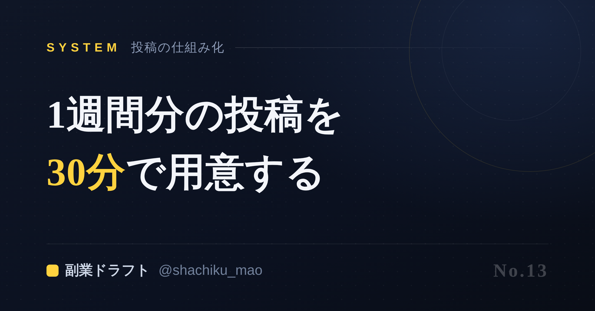
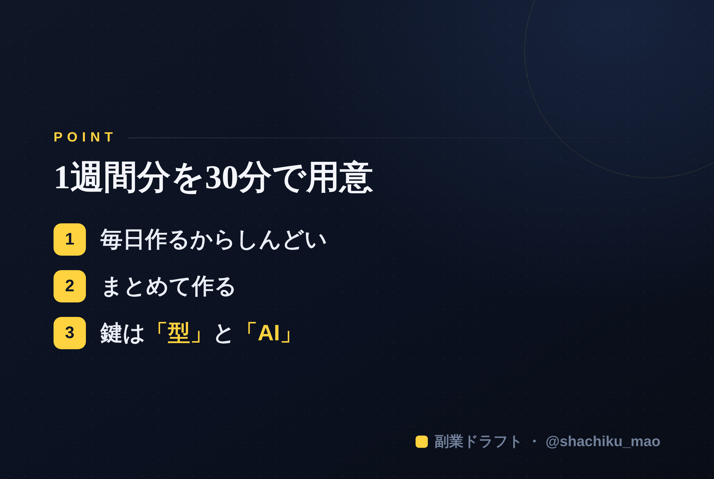

1. 「タイトルをコピー」→ note のタイトル欄に貼る
2. オレンジのラベルの画像（見出し画像）を note の見出し画像に設定
3. 「本文1をコピー」→ note本文に貼る
4. 青いラベルの位置（本文の途中）に、同じ名前の画像をアップして挿入
5. 「本文2をコピー」→ 続きを貼る
※ 見出しが普通の文字になったら、その行を選んで「大見出し」に設定してください

発信が続かない最大の理由は、「毎日ネタを考えるのがしんどい」から。
逆に言えば、毎日考えるのをやめれば、発信は続きます。今日は、1週間分の投稿を30分でまとめて用意する「作りだめ」の仕組みを、具体的に紹介します。
なぜ「毎日」がしんどいのか
毎日発信しようとすると、こうなります。
「今日は何を書こう…」→ ネタ探しで30分 → 書き始めるも気が乗らない → 結局投稿できず自己嫌悪。
この「毎回ゼロから考える」負荷が、継続を殺します。1回1回は小さくても、毎日だと確実に効いてきます。
解決策＝「まとめて作る」
プロの発信者の多くは、毎日は考えていません。決めた時間に、まとめて用意しています。これを"バッチ化"と言います。
やり方はシンプル。
ステップ①：週の"軸テーマ"を1つ決める 今週は「肌質別のスキンケア」でいく、のように大枠を決める。毎回ジャンルを変えないのがコツ。
ステップ②：1テーマを"切り口"で増やす 同じテーマでも、切り口を変えれば何本も作れます。
- 失敗談ver（私はこう失敗した）
- 手順ver（3ステップで解説）
- 誤解ver（よくある勘違い）
- ビフォーアフターver（変わった話）
これで1テーマから5〜7本は作れます。
ステップ③：曜日に割り振る 月＝自己紹介系、火＝ノウハウ、水＝失敗談…と、あらかじめ枠を決めておくと、迷いが消えます。
30分に短縮する鍵は「型」と「AI」
とはいえ、手作業でこれをやると、慣れるまでは時間がかかります。ここを一気に短縮するのが、型とAIの組み合わせ。
強みを一度言語化しておけば、そこから「今週の軸テーマ→切り口違いの投稿→曜日割り」まで、AIが一気に用意してくれます。人は最後に確認して整えるだけ。これで、本当に30分で1週間分が仕込めます。
平日は「出すだけ」にする
こうして週末に仕込んでおけば、平日は投稿ボタンを押すだけ（または予約投稿で自動公開）。考える時間ゼロで、発信が途切れない状態が作れます。

自己ヒヤリングで強みを引き出し、1週間分の投稿カレンダーと各下書きをまとめて生成してくれるのが 「副業ドラフト」 です。作りだめが、本当に数十分で終わります。無料で試せます。
👉 https://note-threadssf.onrender.com
毎日考えるのをやめた人から、発信は続き始めます。